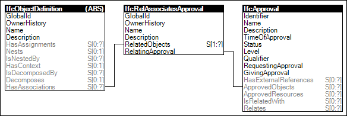

Link to this page
Link to this pageAny object or property can have associated approvals indicating who is required to approve the data, the status of whether it has been approved, and the date/time of such approval. Approvals may require multiple parties fulfilling various roles.
Figure 4 illustrates an instance diagram.
 |
Figure 4 — Approval |